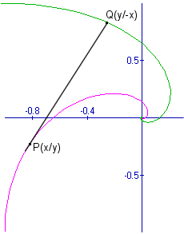
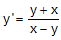
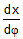
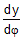
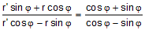
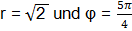
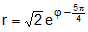

Lösung PUZZLE 21: Das Käferproblem
Ohne höhere Mathematik kann man die Frage nach dem Treffpunkt und die Länge des Weges beantworten:
Aus Symmetriegründen werden sich die Käfer im Mittelpunkt des Quadrates treffen (wie weiter unten gezeigt wird,
ist dies allerdings ein 'Grenzpunkt').
Da sich Käfer 1 immer direkt auf Käfer 2 zubewegt, dieser aber nicht auf Käfer 1, so muss die Länge des Weges gleich der
Anfangsdistanz, also gleich der Länge der Quadratseite sein.

Die Art der Kurve kann mit Hilfe einer Differentialgleichung bestimmt werden:
Der Ursprung des Koordinatensystems wird in den Mittelpunkt eines Quadrates mit Seitenlänge 2 gesetzt. Befindet sich
Käfer 1 im Punkt P(x/y), so muss sich Käfer 2 aus Symmetriegründen im Punkt Q(y/-x) befinden. Die Gerade (PQ) ist
Tangente in P an die gesuchte Kurve, die Käfer 1 zurücklegt. Also gilt die Differentialgleichung
 mit Anfangsbedingung x = y = -1.
Sie kann mit der Substitution z:=y/x gelöst werden. Es gibt aber eine einfachere Lösung, die von meinem Kollegen
Walter Burgherr (Danke!) stammt:
Führt man Polarkoordinaten ein, so gilt x = r cos φ, y = r sin φ, also
 = r' cos φ - r sin φ und
 = r' sin φ + r cos φ
Setzt man diese Werte in die obenstehende Differentialgleichung ein, so erhält man die Differentialgleichung für r in Abhängigkeit von φ:
.
Ausrechnen und Vereinfachen führt auf die Differentialgleichung r' = r .
Ihre Lösung lautet r = C eφ. Setzt man zur Bestimmung von C die Anfangsbedingung
 ein, so
erhält man die Gleichung der Kurve (Logarithmische Spirale), auf der sich Käfer 1 bewegt:

Der Treffpunkt wird also für φ → - ∞ erreicht!
Berechnet man die dazugehörige Bogenlänge durch Integration so erhält man in der Tat 2, die Länge der Quadratseite.